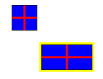

Class: FigureTutorial

Although the BasicFigure class used in the previous tutorial is a fast and simple way of getting things drawn on the screen, in general you will want to create your own Figure classes for particular applications. This tutorial shows you how. To do so, you will need to delve into the Java2D API, as the Diva canvas does not attempt to hide this API, but to leverage it.
In general, defining a completely new type of Figure means implementing the Figure interface. However, it is usually simpler just to subclass the AbstractFigure class and override at least the methods getShape(), transform(), and paint(). Our example (see the source file for the complete code) extends AbstractFigure:
public class CustomRectangle extends AbstractFigure {
private Rectangle2D _bounds;
public CustomRectangle (
double x, double y,
double width, double height) {
_bounds = new Rectangle2D.Double(x,y,width,height);
}
....
}
The appearance of this figure is shown in the image above (the yellow outline is the highlighting, and is not part of this figure). It has a fill, a 1-point black outline, and some additional stuff drawn on it.
Let's look at the individual methods of this class. The getBounds() method gets the shape of the figure's stroke outline, and then takes the bounding box of that shape. (If we were to simply return _bounds, part of the outline would fall outside the bounding box and we would get "dirt" on the screen when we moved the figure.)
public Rectangle2D getBounds () {
Stroke s = new BasicStroke(1.0f);
return s.createStrokedShape(_bounds).getBounds2D();
}
The getShape() method simply returns the outline rectangle. getShape() is used by methods in the Diva canvas to do things like place grab-handles on figures and to put highlights around them:
public Shape getShape () {
return _bounds;
}
The paint() method is where most of the work (in this example) is done. Note that the argument is an instance of java.awt.Graphics2D. This method will be called in the event thread whenever AWT redraws the JCanvas that contains this figure. We won't show all of this method here, just the start:
public void paint (Graphics2D g) {
Stroke s = new BasicStroke(1.0f);
g.setStroke(s);
g.setPaint(Color.blue);
g.fill(_bounds);
g.setPaint(Color.black);
g.draw(_bounds);
....
}
Finally, the transform() method transforms the figure. This method
is used whenever a figure is scaled or moved. Note that this code
calls the repaint() method before and after transforming the figure shape.
This ensures that the screen is properly redrawn.
public void transform (AffineTransform at) {
repaint();
_bounds = (Rectangle2D) CanvasUtilities.transform(_bounds, at);
repaint();
}
There are other methods that may need to be over-ridden, depending
on what exactly your figure class does. For more information on the
methods of Figure, see the API documentation.
A simpler, although somewhat slower executing, way to specify the look of a figure is to create a GIF file that looks like the figure. The GIF file can be loaded into an Image and the Image embedded into a figure. An ImageFigure does exactly this.
// Create an image figure and make it draggable
Image img = Toolkit.getDefaultToolkit().getImage(IMAGE_FILE_NAME);
MediaTracker tracker = new MediaTracker(canvas);
tracker.addImage(img,0);
try {
tracker.waitForID(0);
}
catch (InterruptedException e) {
System.err.println(e + "... in FigureTutorial");
}
ImageFigure imgFig = new ImageFigure(img);
imgFig.translate(300,100);
layer.add(imgFig);
imgFig.setInteractor(defaultInteractor);
The media tracker is responsible for waiting for the image to be completely
loaded from the file before creating the ImageFigure. After being created,
the ImageFigure can be used exactly like other figures.